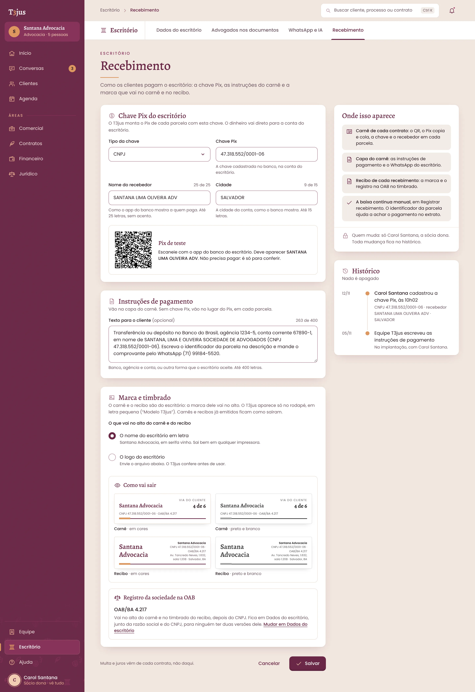

Como a prévia sai hoje
O código de hoje: no carnê, só “CNPJ · OAB”; no recibo, o nome curto no lugar da razão social, “CNPJ · OAB” juntos e o endereço antigo. Diferente do papel que sai de verdade desde a F3.133.
Abrir: marca.html?estado=hoje (estreite a janela para ver o celular)